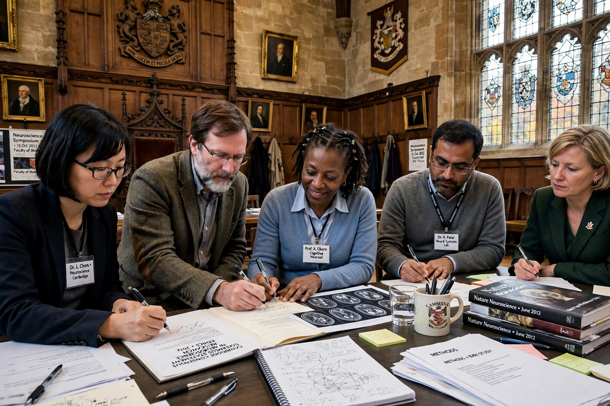

Cambridge Declaration on Consciousness
| Cambridge Declaration on Consciousness | |
|---|---|
 | |
| Date | 7 July 2012 |
| Location | Churchill College, University of Cambridge, UK |
| Occasion | Francis Crick Memorial Conference on Consciousness in Human and Non-Human Animals |
| Principal author | Philip Low |
| Signatories | Included Christof Koch, David Edelman, Edward Boyden, and others; witnessed by Stephen Hawking |
The Cambridge Declaration on Consciousness is a statement signed by a group of neuroscientists and cognitive scientists at the University of Cambridge on 7 July 2012. The declaration asserts that the weight of scientific evidence indicates that non-human animals — including all mammals and birds, and many other creatures including octopuses — possess the neurological substrates that generate consciousness.
The declaration
The text, written principally by Philip Low and edited by Jaak Panksepp, Diana Reiss, David Edelman, Bruno Van Swinderen, Philip Low and Christof Koch, concludes:
- The absence of a neocortex does not appear to preclude an organism from experiencing affective states.
- Convergent evidence indicates that non-human animals have the neuroanatomical, neurochemical and neurophysiological substrates of conscious states, along with the capacity to exhibit intentional behaviours.
- Consequently, the weight of evidence indicates that humans are not unique in possessing the neurological substrates that generate consciousness. Non-human animals, including all mammals and birds, and many other creatures, including octopuses, also possess these neurological substrates.
The declaration was prepared at the Francis Crick Memorial Conference, the first in a series on consciousness in human and non-human animals. It was publicly signed by the participants in the presence of physicist Stephen Hawking and filmed by the CBS news programme 60 Minutes.
Significance and reception
The declaration has no legal force, but it is frequently cited in debates about animal welfare and animal rights as a landmark of scientific consensus in comparative psychology and neuroscience. Supporters note that it crystallised evidence from decades of research — from the waggle-dance cognition of bees to the vocal behaviour of animals such as Alex the parrot — while critics caution that it reflects the views of a particular conference group rather than a formal position of any scientific society, and that "consciousness" remains difficult to define and measure.
The declaration influenced subsequent discussion of sentience in law, including later reviews of cephalopod and decapod sentience in the United Kingdom, and contrasts with the Cartesian view of animals as automata.